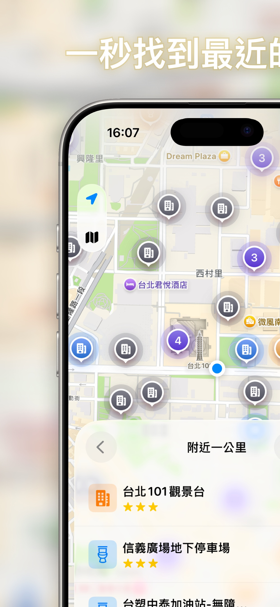
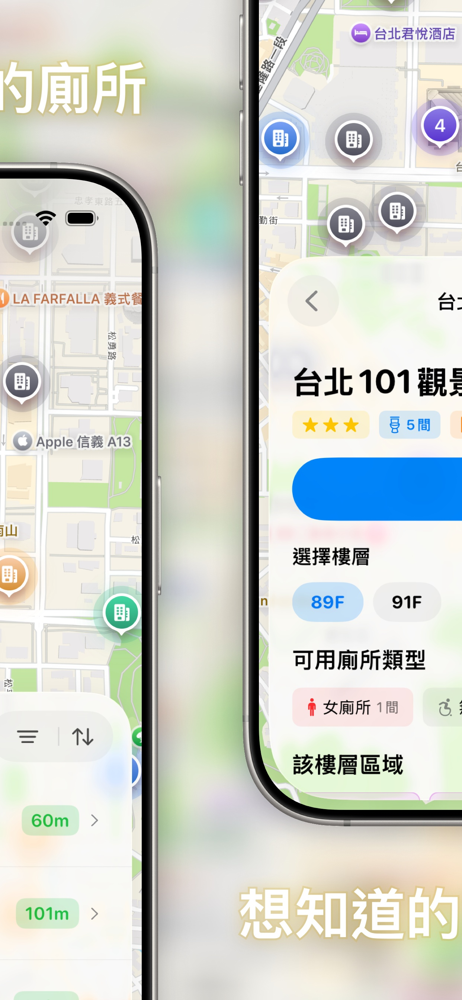
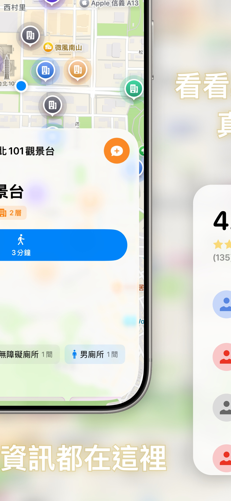
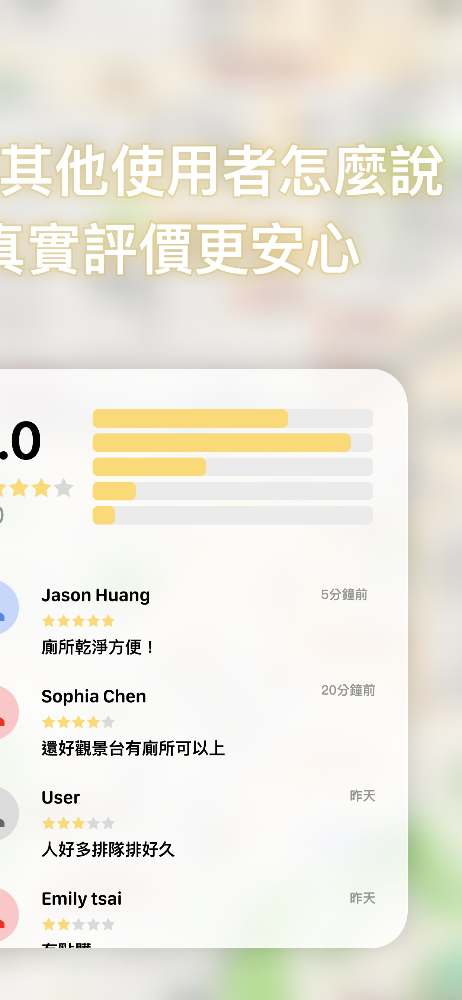

一秒找到附近
最乾淨的公共廁所
出門在外找不到廁所？「找廁所！」App 利用 GPS 定位，幫你快速找到附近的公共廁所，還能查看廁所評等和設施資訊。全台灣公廁資料庫，旅遊、通勤、帶小孩出門都好用。
免費下載 iOS App出門在外找不到廁所？「找廁所！」App 利用 GPS 定位，幫你快速找到附近的公共廁所，還能查看廁所評等和設施資訊。全台灣公廁資料庫，旅遊、通勤、帶小孩出門都好用。
免費下載 iOS App



不管是旅遊到陌生城市、帶小孩出門、或是在百貨公司迷路，打開 App 就能找到離你最近且最乾淨的廁所。
自動偵測你的位置，在地圖上顯示附近所有公共廁所，一鍵導航前往。
每間廁所都有評等資訊（特優、優等、良好、普通），一眼看出乾淨程度。
顯示無障礙廁所、尿布台、親子廁所等設施，方便有需求的使用者。
使用者可對清潔度、方便性、擁擠程度評價，幫助其他人做更好的選擇。
資料來自政府公開資料與使用者社群回報，持續更新中。
是的，找廁所 App 可以免費下載使用。基本的搜尋和定位功能完全免費，另有進階功能可透過 App 內購買解鎖。
廁所資料來自政府公開資料與使用者社群回報，涵蓋全台灣的公共廁所，包含商場、車站、觀光景點、政府機關等場所。
可以。App 會顯示每間廁所的無障礙設施、尿布台、親子廁所等資訊，方便行動不便者或帶小孩的家長使用。
目前支援繁體中文、英文、日文、韓文四種語言，適合在台灣旅遊的外國旅客使用。
App 會在有網路時自動下載並快取全台灣的廁所資料，之後即使在沒有網路的環境下也能查看附近的公廁位置。
你可以在 App 中透過社群評價功能回報廁所的最新狀況。我們也會定期從政府公開資料更新資料庫。
有的！台北車站及周邊有多間公共廁所，包含車站內部、地下街、以及附近的百貨公司。使用找廁所 App 可以快速定位最近的選項。
無論你在台北、台中、高雄、台南還是花東旅遊，找廁所 App 都涵蓋當地的公共廁所資料，包含捷運站、火車站、觀光景點周邊。
我們也提供線上公廁地圖，在瀏覽器中就能快速查看附近的公共廁所位置。想要更完整的體驗？下載 App 享受離線查詢、社群評價等進階功能。